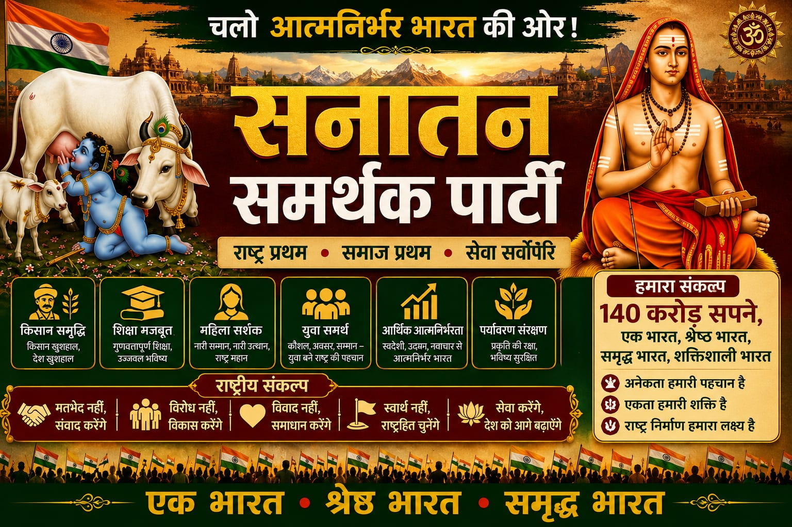

भारत की सनातन संस्कृति, राष्ट्रीय एकता, ग्राम विकास, युवा शक्ति, गौ संरक्षण और आत्मनिर्भर भारत के निर्माण हेतु समर्पित।
राष्ट्र निर्माण के लिए समर्पित एक सांस्कृतिक एवं राष्ट्रवादी संगठन

सनातन समर्थक पार्टी भारतीय संस्कृति, आध्यात्मिकता, राष्ट्रवाद और सामाजिक न्याय के मूल सिद्धांतों पर आधारित संगठन है।
हमारा उद्देश्य भारत को विश्वगुरु बनाना, युवाओं को सशक्त करना, गांवों का विकास करना तथा भारतीय सभ्यता एवं परंपराओं की रक्षा करना है।
पार्टी राष्ट्रहित, सुरक्षा, संस्कृति, शिक्षा, रोजगार, कृषि और सामाजिक विकास को सर्वोच्च प्राथमिकता देती है।
108 संकल्पों में शामिल मुख्य विषय
गोमाता संरक्षण, गौशाला निर्माण और भारतीय कृषि संस्कृति को बढ़ावा।
रोजगार, कौशल विकास, सैन्य प्रशिक्षण एवं नेतृत्व निर्माण।
डिजिटल गांव, स्वास्थ्य केंद्र, स्वच्छता एवं आत्मनिर्भर पंचायतें।
भारतीय संस्कृति, संस्कृत भाषा और धार्मिक परंपराओं का संरक्षण।
सीमा सुरक्षा मजबूत करना, आतंकवाद के विरुद्ध कठोर नीति एवं सेना का आधुनिकीकरण।
निःशुल्क शिक्षा, गुरुकुल व्यवस्था, आयुर्वेद विश्वविद्यालय एवं भारतीय ज्ञान परंपरा को बढ़ावा।
राष्ट्र एवं समाज के लिए हमारी प्रतिबद्धताएं
हिन्दू राष्ट्र की घोषणा एवं सनातन बोर्ड का गठन।
देशभर में समान नागरिक संहिता लागू करना।
गांव स्तर पर आधुनिक विद्यालय, स्वास्थ्य केंद्र एवं डिजिटल लाइब्रेरी।
MSP की कानूनी गारंटी एवं कम ब्याज कृषि ऋण।
महिलाओं एवं बालिकाओं की सुरक्षा हेतु कठोर कानून।
योग, ध्यान, संस्कृत एवं भारतीय परिधान को प्रोत्साहन।
“हमारा लक्ष्य केवल राजनीति नहीं, बल्कि भारत की सनातन संस्कृति, राष्ट्रीय गौरव और सामाजिक एकता का पुनर्जागरण है।”
सनातन समर्थक पार्टी भारत को विश्वगुरु बनाने, युवाओं को सशक्त करने, गांवों को आत्मनिर्भर बनाने और भारतीय मूल्यों को पुनः स्थापित करने हेतु कार्यरत है।
राष्ट्रीय कार्यालय एवं संपर्क जानकारी
अयोध्यापुरम कॉलोनी, आराध्य होम स्टे,
दशरथ कुंड वॉर्ड,
पंचकोसी परिक्रमा मार्ग,
निकट चूड़ामणि चौराहा,
अयोध्या धाम, अयोध्या
पिन कोड - 224001
📞 7651811485
📞 9918112402
✉ info@sanatansamarthakparty.in
“धर्म की रक्षा, संस्कृति का उत्थान, राष्ट्र का सम्मान और जनता का कल्याण” हम एक ऐसे भारत का निर्माण करना चाहते हैं जहाँ युवाओं को रोजगार, महिलाओं को सुरक्षा, किसानों को सम्मान, गरीबों को न्याय, और प्रत्येक नागरिक को गरिमा के साथ जीवन जीने का अवसर प्राप्त हो।